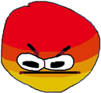
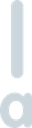
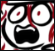

Currently, these are only the emojis currently in use, all the deleted ones are underway!
Also, this is a Lot of images, so your it might take a while to load it all
mute ante li pali e lipu ni

:83c:
- first use: 15/7/23

:Angery:
- first use: 27/12/22
:__:
- first use: 5/9/23

:a_:
- first use: 29/6/22

:augh:
- first use: 19/11/23